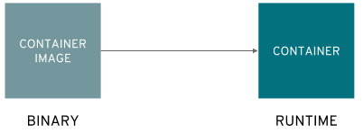
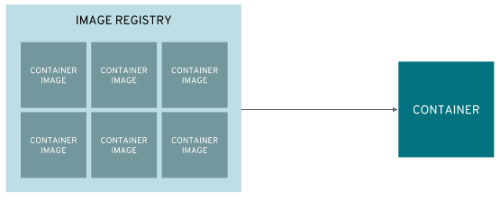
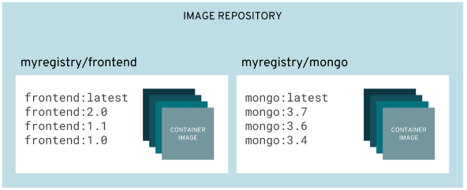
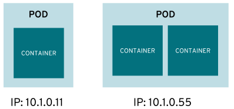
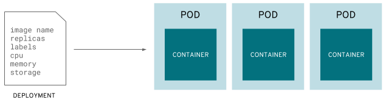
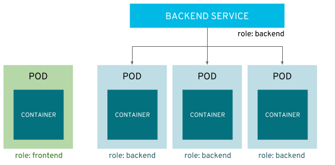
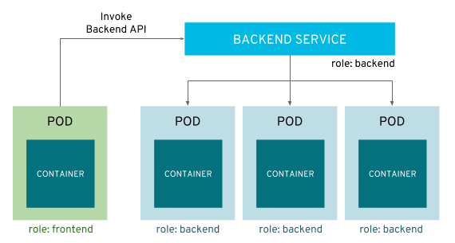
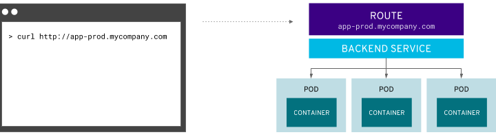
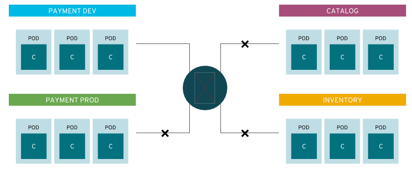
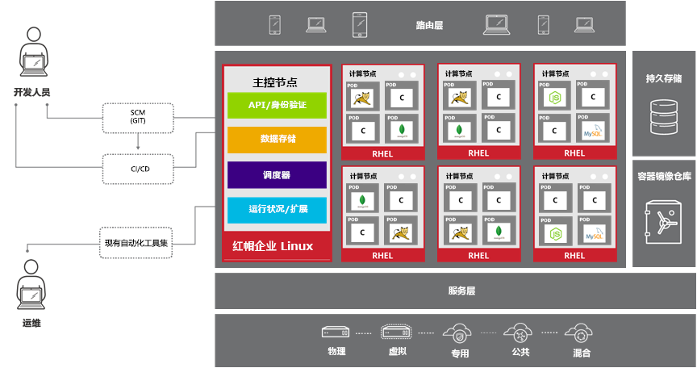

apiVersion: v1
kind: ReplicationController
metadata:
name: mysql
spec:
replicas: 1
selector:
app: mysql
template:
metadata:
name: mysql
labels:
app: mysql
spec:
containers:
- name: mysql
image: registry.example.com/rhscl/mysql-57-rhel7:latest
env:
- name: MYSQL_ROOT_PASSWORD
value: redhat
- name: MYSQL_USER
value: wp_user
- name: MYSQL_PASSWORD
value: wp_pass
- name: MYSQL_DATABASE
value: wp_db
ports:
- containerPort: 3306
name: mysqlOPENSHIFT 介绍
Table of Contents
基本概念
Container
Container 是 OpenShift 的最小计算单元。
Container Image
Container 是从 Container Image 创建而来。

Image Registry
Image Registry 用来保存不同版本的 Container Image。

|
Note
|
OPENSHIFT Image Registry 分为两种：内部(built-in)，外部(Upstream)。内部 Image Registry 用来保存 S2I 生成 的镜像及从外部 下载 的镜像。外部 Image Registry 可以是 Docker Hub(https://hub.docker.com), Red Hat registry(https://registry.access.redhat.com/) 或本地私有镜像仓库中的 Image Registry，如果当镜像在内部中找不到时会从外部中去查找。
|
Image Repository
Image Repository 中保存着所有的 Image Registry。

Pod
一个或多个 Container 被包装成一个 Pod，Pod 通常是部署、管理等的最小单元。

Deployment
Pods 的配置定义在 Deployment 中。

Service
Service 在多个 Pod 之上并提供内部负载均衡和服务发现。

应用之间的通信是通过 Service 来实现的。

Route
Route 将服务添加到外部负载均衡器，使服务可以外部可见。

Project
Project 将应用在不同的部门、环境、团队中隔离。

架构概述

支持的基础架构
-
任何支持红帽企业 Linux 的环境都支持 OpenShift：
-
在裸机物理计算机或虚拟化基础架构中，以及私有云或认证公有云中
-
包括所有支持的虚拟化平台：红帽虚拟化、vSphere 和 Hyper-V
-
-
红帽 OpenStack 平台，以及 Amazon、Google 和 Azure 等认证公有云提供商
-
-
混合方式支持在所有这些基础架构中部署 OpenShift 实例
-
仅支持 x86 平台
-
计算节点主机
-
OpenShift 可在 RHEL 或 Red Hat Enterprise Atomic Host 上运行
-
OpenShift 具有两种类型的主机：计算节点和主控节点
-
计算节点是安装有 OpenShift 的 RHEL 7 或 Red Hat Atomic Host 的实例
-
计算节点上运行最终用户应用
-
计算节点由主控节点进行调度
-
-
计算节点守护进程和其他软件在计算节点上运行
主控节点主机
-
也是红帽企业 Linux 或 Red Hat Atomic Host 的实例
-
主要功能：
-
调度计算节点上的所有活动
-
了解和维护 OpenShift 环境内的状态
-
-
利用多个主控节点实现高可用性
ReplicationController
Replication Controller 确保任意时刻始终运行指定数目的 Pod 的副本，确保了 Pod 可用。
如果一个 Pod 退出或被删除，则 Replication Controller 将执行实例化操作，确保 Pod 的副本数量为指定的数量。同样，如果运行中的 pod 超过所需的数目，replication controller 会根据需要删除相应的数量。
一个 Replication Controller 的配置包括：
-
需要运行 Pod 的副本数，并且运行时可随时调整
-
用于创建复制一个 pod 的定义声明
-
用于识别管理 Pod 的一个 selector
创建 ReplicationController 示例
本示例 ReplicationController 配置运行一个 mysql Pod。
1 - ReplicationController 配置文件 replication.yaml
2 - oc 命令创建 ReplicationController
$ oc create -f ./replication.yaml
replicationcontroller "mysql" created3 - oc 命令查看 ReplicationController
$ oc describe rc/mysql | grep "Pods Status"
Pods Status: 1 Running / 0 Waiting / 0 Succeeded / 0 Failed4 - oc 命令查看 Pod
$ oc get pods --selector=app=mysql --output=jsonpath={.items..metadata.name}
mysql-tg8cqDeploymentConfig
Openshift 的 DeploymentConfig 是对 kubernetes Deployment 概念的扩展，同样 DeploymentConfig 构建于 ReplicationController 之上，但扩展支持软件开发和部署生命周期的概念，增加了更多的支持。
在最简单的情况下，一个 DeploymentConfig 只是创建一个新的 ReplicationController，ReplicationController 根据定义启动 pods。 但是，实际生产中部署还需要提供从现有部署镜像转换生成新的镜像的能力，并且还可能需要了定义 hook 的能力，在 ReplicationController 创建之前或之后执行 hook 定义。
OpenShift DeploymentConfig 定义部署的描述如下:
-
ReplicationController 的定义
-
能够自动创建一个新部署的触发器
-
部署之间转换的策略
-
hook 的生命周期
创建 DeploymentConfig 示例
1 - DeploymentConfig 配置文件 deployment.yaml
apiVersion: v1
kind: DeploymentConfig
metadata:
name: mysql
spec:
replicas: 1
selector:
app: mysql
template:
metadata:
name: mysql
labels:
app: mysql
spec:
containers:
- name: mysql
image: registry.example.com/rhscl/mysql-57-rhel7:latest
env:
- name: MYSQL_ROOT_PASSWORD
value: redhat
- name: MYSQL_USER
value: wp_user
- name: MYSQL_PASSWORD
value: wp_pass
- name: MYSQL_DATABASE
value: wp_db
ports:
- containerPort: 3306
name: mysql
strategy:
type: Rolling2 - oc 命令创建 DeploymentConfig
$ oc create -f ./deployment.yaml
deploymentconfig "mysql" created3 - 查看 Deployment Pod
$ oc describe po/mysql-1-deploy | tail -n 8
Events:
Type Reason Age From Message
---- ------ ---- ---- -------
Normal Scheduled 4s default-scheduler Successfully assigned mysql-1-deploy to master.example.com
Normal SuccessfulMountVolume 4s kubelet, master.example.com MountVolume.SetUp succeeded for volume "deployer-token-fxs2m"
Normal Pulled 2s kubelet, master.example.com Container image "registry.example.com/openshift3/ose-deployer:v3.9.30" already present on machine
Normal Created 2s kubelet, master.example.com Created container
Normal Started 2s kubelet, master.example.com Started container4 - 查看 DeploymentConfig 创建的 ReplicationController
$ oc describe rc mysql-1 | grep "Pods Status"
Pods Status: 1 Running / 0 Waiting / 0 Succeeded / 0 Failed5 - oc 命令查看 Pod
$ oc get pods --selector=app=mysql --output=jsonpath={.items..metadata.name}
mysql-1-8wwr5